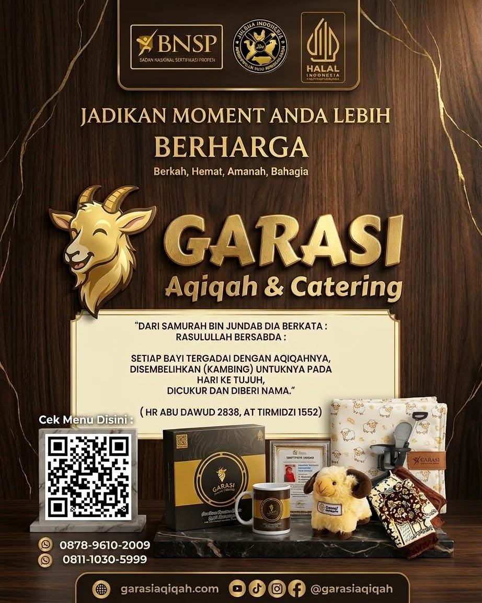
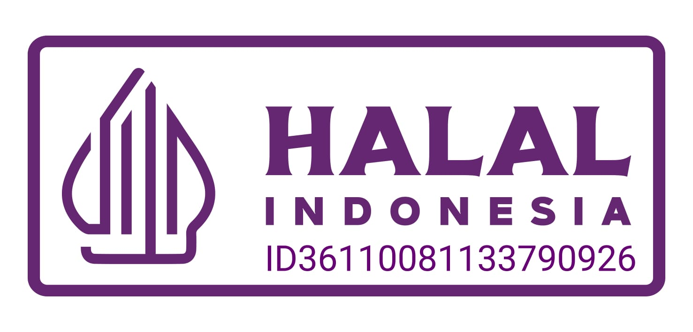
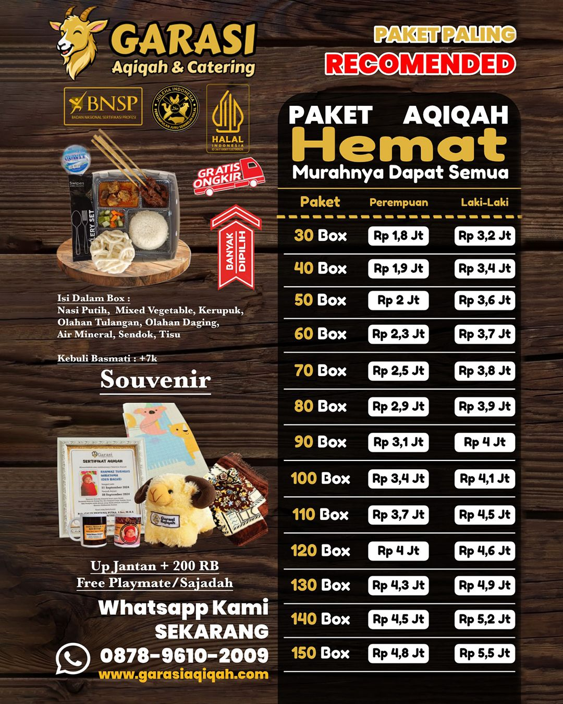
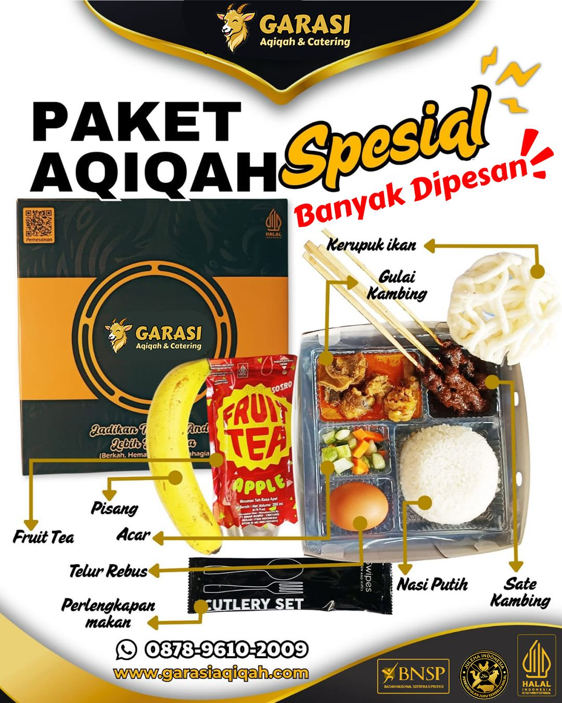
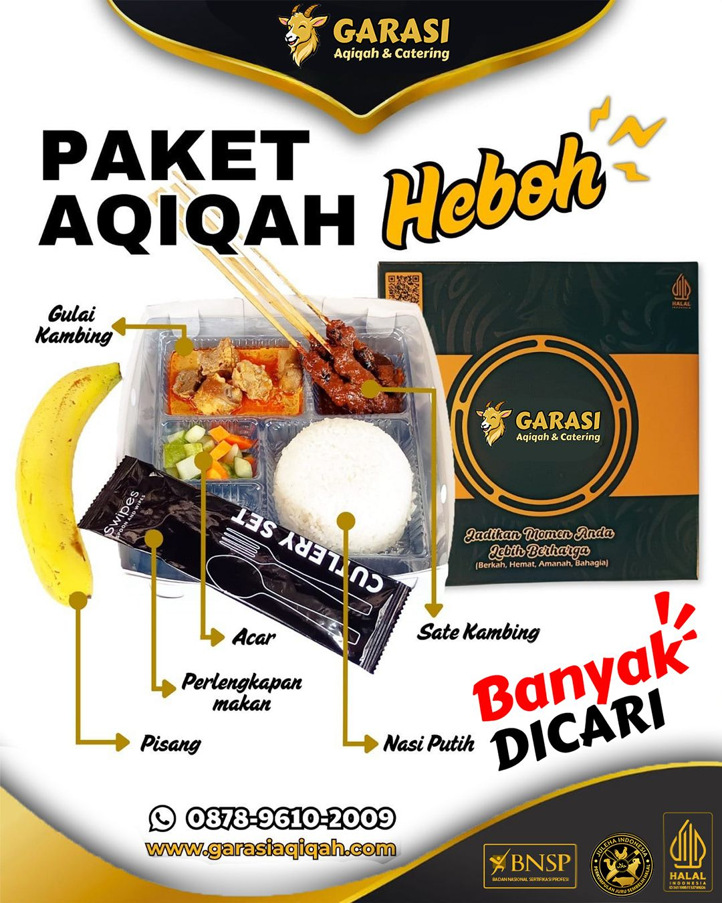
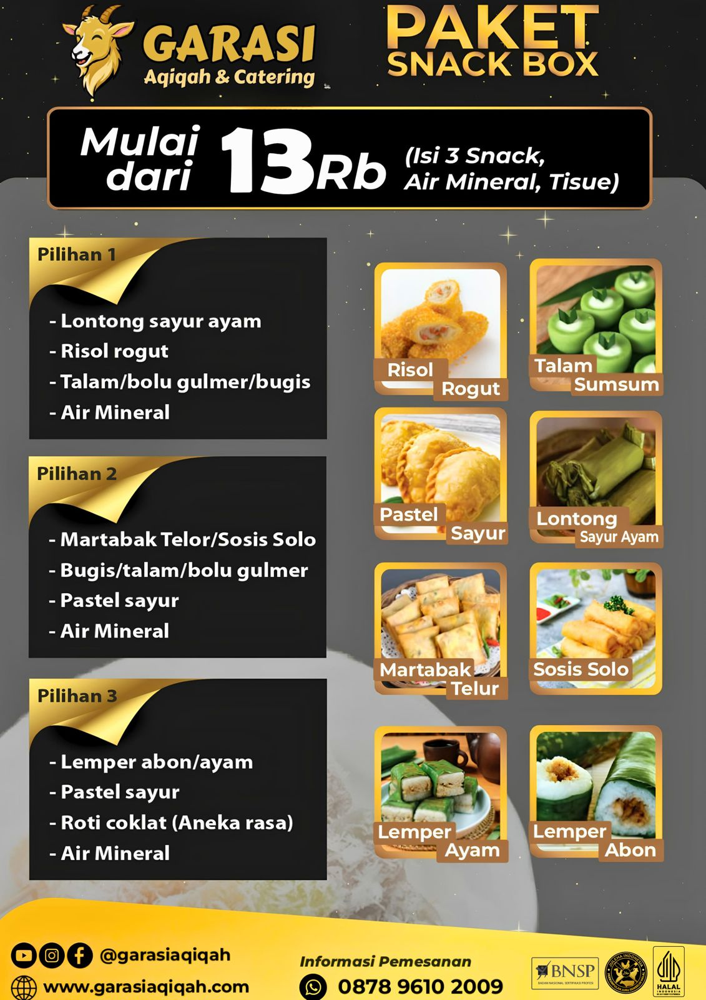
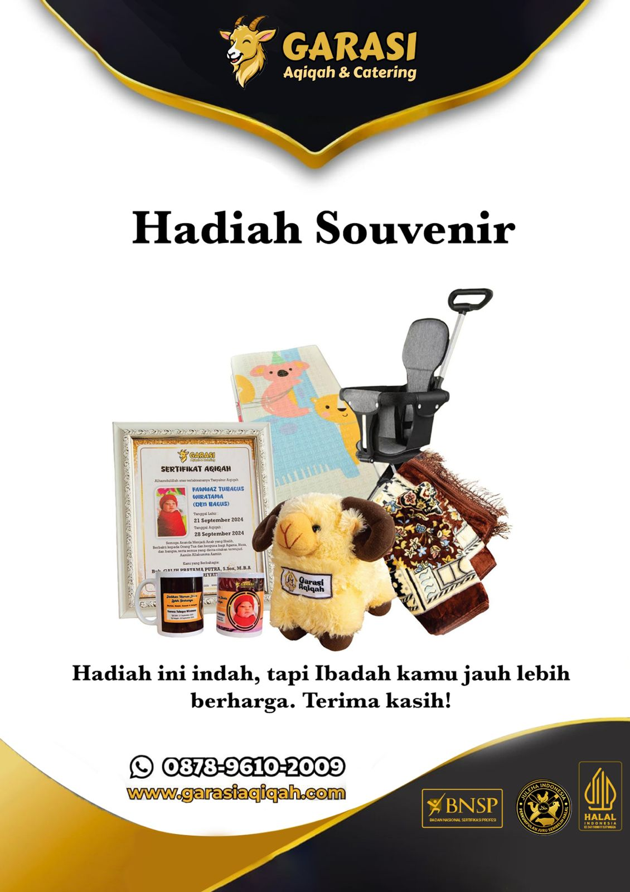

Berkah
Ibadah sunnah untuk si kecil dan bentuk syukur keluarga.
Welcome To
Jadikan Moment Anda Lebih Berharga
Momen bahagia keluarga menjadi lebih bermakna dengan Garasi Aqiqah. Betapa pentingnya keberkahan dalam setiap kelahiran buah hati, oleh karena itu kami hadir untuk memberikan layanan yang penuh berkah dan keikhlasan. Dengan paket yang hemat namun tetap berkualitas, memastikan setiap proses berjalan dengan amanah sesuai syariat. Kami berkomitmen untuk menghadirkan kebahagiaan Ayah Bunda, menjadikan momen aqiqah ini sebagai momen yang tak terlupakan.
Bersama Garasi Aqiqah, nikmati kemudahan, ketenangan, dan kebahagiaan dalam menjalankan ibadah aqiqah.
Garasi Aqiqah support by NA Group, dapur berpengalaman lebih dari 10 tahun. Aqiqah & Catering · Tangerang
Lihat Katalog WhatsApp Business
“Setiap bayi tergadai dengan aqiqahnya, disembelihkan untuknya pada hari ketujuh, dicukur dan diberi nama.”
HR Abu Dawud 2838 · At-Tirmidzi 1552
Tentang Kami
Garasi Aqiqah adalah layanan aqiqah & catering yang didukung oleh NA Group — dapur berpengalaman lebih dari 10 tahun.
Berbagai pilihan tersedia, mulai dari paket aqiqah kambing, ayam bakar, hingga snack box. Produk memiliki sertifikat halal dengan nomor ID36110081133790926.


Nilai Kami
Empat nilai yang menjadi dasar setiap layanan kami.
Ibadah sunnah untuk si kecil dan bentuk syukur keluarga.
Berbagai pilihan paket yang bisa disesuaikan dengan kebutuhan.
Dapur berpengalaman lebih dari 10 tahun di bawah NA Group.
Momen keluarga yang lebih berharga untuk dikenang bersama.
Daftar Harga
Spesialis kambing gratis masak & potong. Detail pilihan dan harga tercantum pada poster asli di samping.
Harga mengikuti poster. Untuk informasi terbaru, silakan hubungi kami.
Tanya Harga Kambing
Menu Aqiqah
Pilihan menu yang dapat Anda tanyakan saat memesan.

Pilihan Paket
Pilih paket yang sesuai, lalu chat kami untuk detail dan pemesanan.





Isi paket dan harga mengikuti poster asli. Hubungi kami untuk informasi terbaru.
Mengapa Garasi Aqiqah
Garasi Aqiqah memberikan gratis ongkir. Sehingga ayah bunda lebih hemat dalam memilih paket aqiqah untuk buah hati.
Garasi Aqiqah menberikan banyak bonus setiap kali pesanannya, sesuai dengan kebutuhan ayah bunda menyambut buah hati.
Garasi Aqiqah memberikan harga yang kompetitif, tetapi tetap berkualitas. Dengan pilihan paket yang sesuai kantong dan bervariasi.
Garasi Aqiqah berkotmitmen untuk mengantarkan pesanan ayah bunda tepat waktu, sesuai dengan jadwal yang telah disepakati.
Garasi Aqiqah memberikan jaminan garansi, jika pesanan ayah bunda tidak di kirim, makanan basi, atau keterlambatan.
Galeri
Foto-foto produk dan dokumentasi yang tersedia.

Silakan hubungi WhatsApp kami di 6287896102009 untuk konsultasi dan pemesanan.
Ya. Sertifikat halal tercantum dengan nomor ID36110081133790926 dan dapat dilihat pada bagian Tentang Kami serta Galeri.
Gg. Dukuh 2 No.38, RT.002/RW.002, Nerogtog, Kec. Pinang, Kota Tangerang, Banten. Plus Code: QMWQ+XR Neroktog, Kota Tangerang, Banten.
Katalog tersedia di WhatsApp Business Garasi Aqiqah.
Tentu. Gunakan tombol konsultasi di halaman ini untuk mengirim pesan otomatis ke WhatsApp kami.
Kami siap melayani Ayah Bunda pesan 1 hari sebelum acara, namun pemesanan lebih lama dari hari H akan lebih baik. Karena melihat ketersediaan stok kambing.
Sangat bisa. kami siap membantu anda untuk mengirimkan masakan ke yayasan atau panti asuhan yang Ayah Bunda inginkan.
Konsultasi Aqiqah
Ceritakan rencana dan kebutuhan Anda. Kami siap membantu melalui WhatsApp.
Kontak Kami
Gg. Dukuh 2 No.38, RT.002/RW.002, Nerogtog, Kec. Pinang, Kota Tangerang, Banten.
Area pengiriman hanya melayani wilayah Tangerang dan Jakarta.